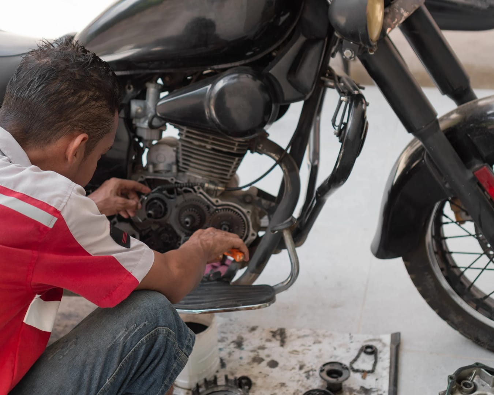

Sistem Penerimaan Murid Baru
SMK NEGERI 2 RANTAU
Informasi lengkap mengenai SPMB SMK Negeri 2 Rantau tersedia melalui kontak WhatsApp kami di bawah ini.
Sistem Penerimaan Murid Baru
Informasi lengkap mengenai SPMB SMK Negeri 2 Rantau tersedia melalui kontak WhatsApp kami di bawah ini.
Program keahlian yang membekali siswa dengan keterampilan profesional di bidang kecantikan, perawatan kulit, dan tata rias rambut sesuai standar industri.


Mempelajari perakitan komputer, instalasi dan pengelolaan jaringan, serta teknologi informasi untuk menunjang kebutuhan dunia kerja di era digital
*Gambar hanya ilustrasi
Program keahlian yang membekali siswa dengan keterampilan perawatan, perbaikan, dan pengelolaan bisnis di bidang otomotif sepeda motor sesuai standar industri.

*Gambar hanya ilustrasi
Bergabunglah bersama kami dan wujudkan impianmu di SMK Negeri 2 Rantau

Jumat Bersih

Jalan Sehat

Keterampilan Seni Tari

Lomba 17 Agustus

Senam Sehat

Upacara Senin